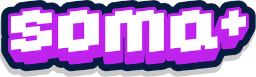
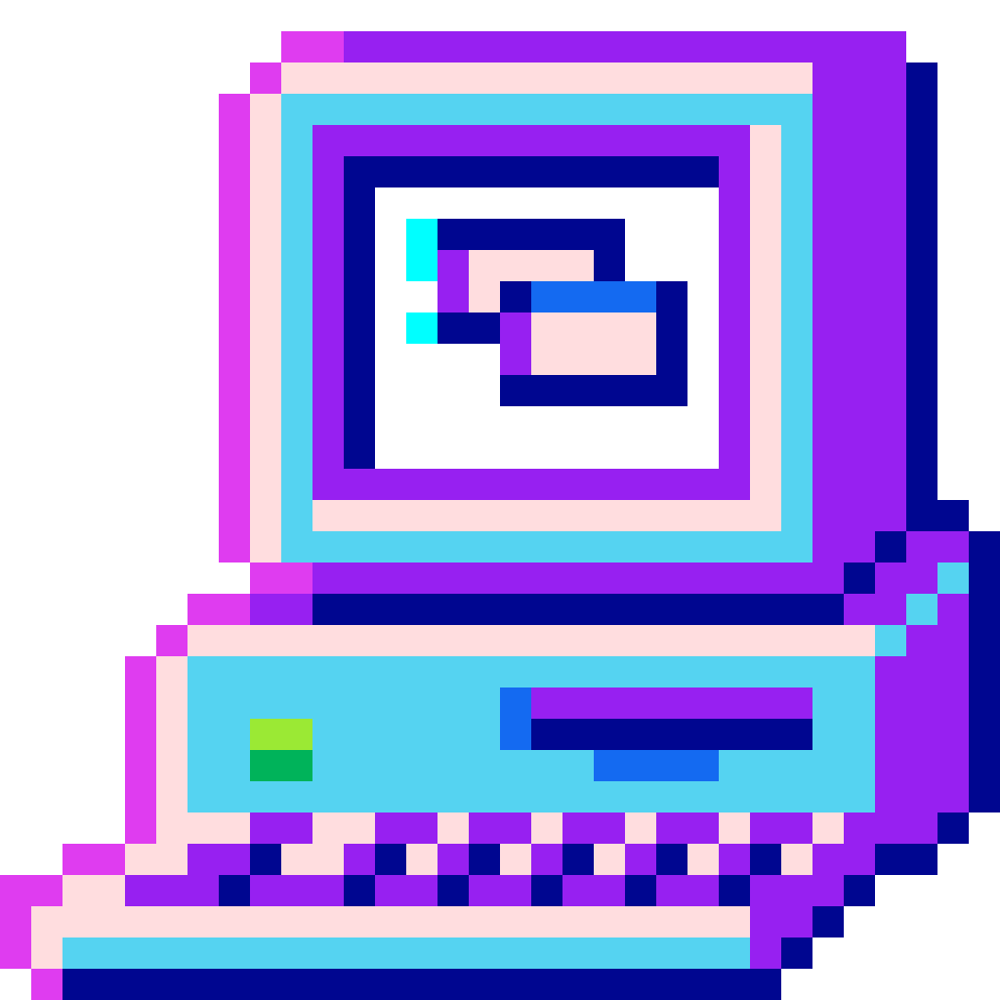
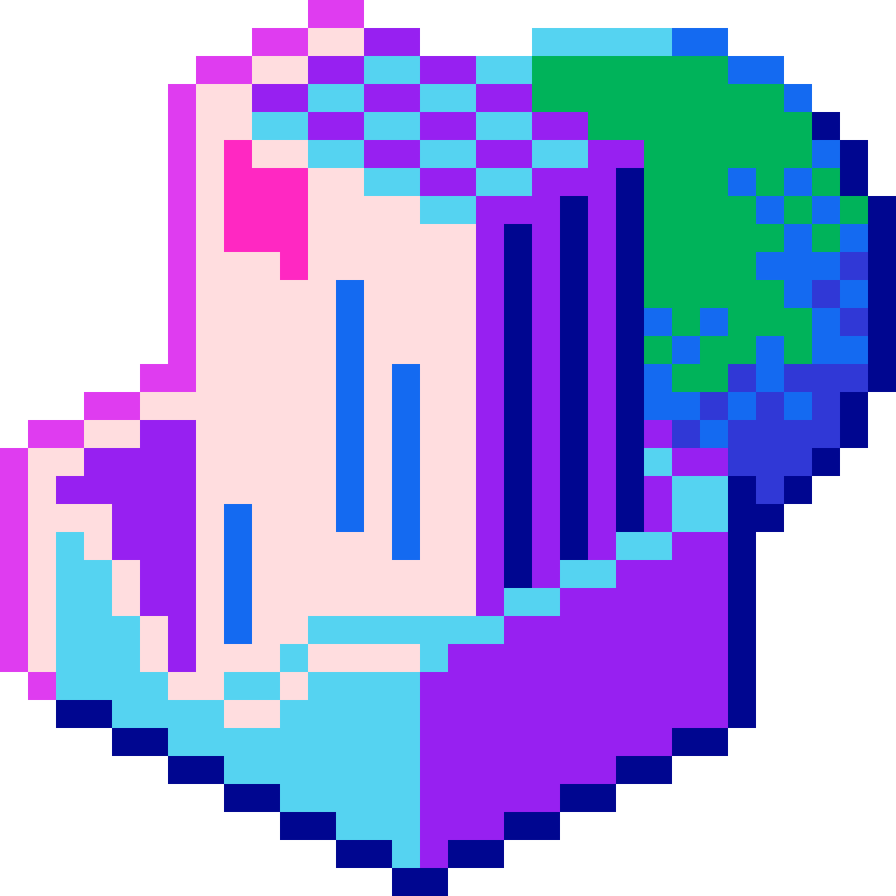
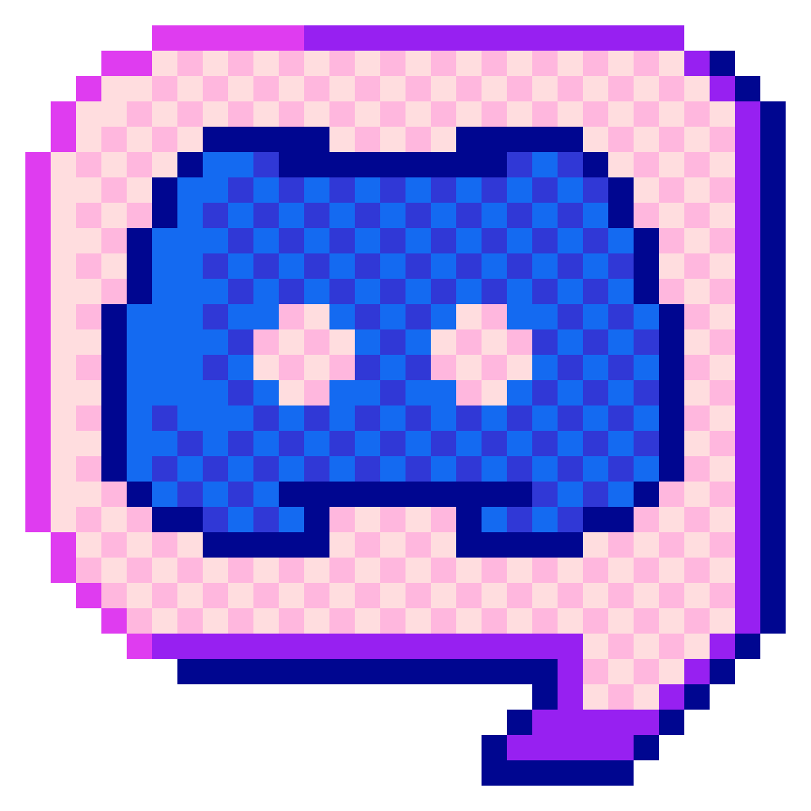
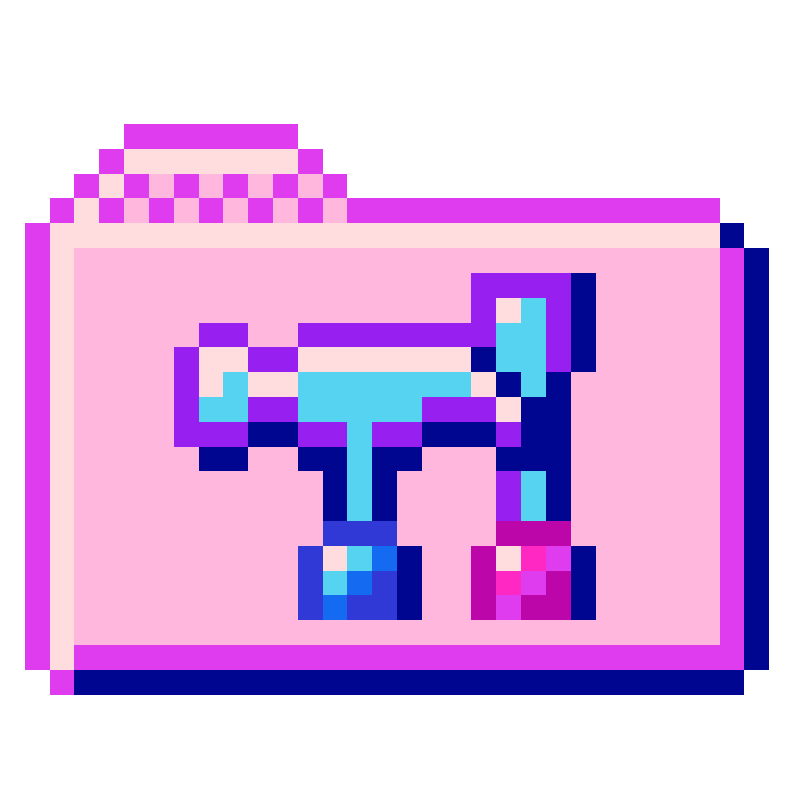
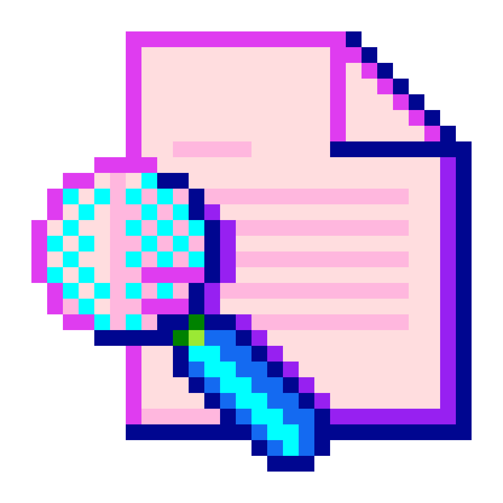
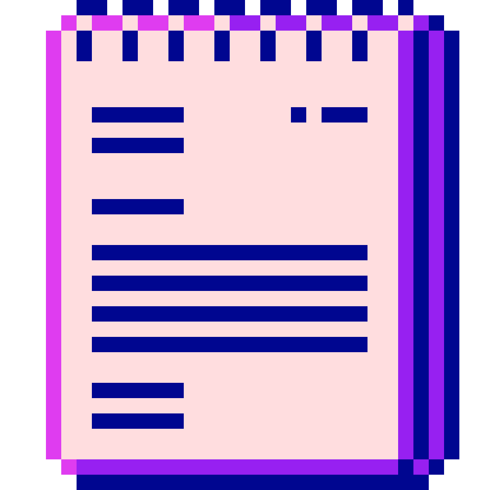

Iniciante
Python para Começar
Lógica de programação, variáveis e seus primeiros scripts, sem pré-requisitos.
9 recursos curados · trilha mais escolhida Ver trilha →
Trilhas gratuitas de Python, JavaScript e dados, feitas para quem está começando do zero, com outras mulheres ao lado em cada linha de código.
Conteúdo gratuito, em português, do primeiro "Olá, mundo!" ao seu primeiro projeto no portfólio.
Lógica de programação, variáveis e seus primeiros scripts, sem pré-requisitos.
9 recursos curados · trilha mais escolhida Ver trilha →Construa páginas interativas e entenda como a web funciona por trás dos cliques.
8 recursos curados Ver trilha →Consultas, planilhas e os primeiros passos para trabalhar com análise de dados.
7 recursos curados Ver trilha →Aprenda a versionar seu código e colaborar em projetos como faz qualquer time de dev.
5 recursos curados Ver trilha →Eu mesma ainda estou no primeiro ano da faculdade e estudo programação há poucos anos. Mas tudo o que aprendi até aqui eu quero compartilhar, para que outras meninas não desistam logo no início.
O SOMA não é só um espaço de aprendizado, é também uma rede de apoio, onde a gente cresce juntas, troca experiência e se fortalece no caminho da tecnologia.
Trilhas de aprendizado, indicações de cursos, comunidades de apoio e dicas de carreira para você escolher o caminho certo na tecnologia no seu ritmo, sem cobrança.
Grupos de estudo, mentoria entre alunas e um espaço para perguntar sem vergonha de "pergunta básica".

Encontros semanais por trilha, para praticar junto e tirar dúvidas em tempo real.

Quem já passou pelo módulo te ajuda a passar também ensinar é a melhor forma de fixar o conteúdo.

Pergunta de principiante é bem-vinda. Aqui todo mundo já travou no mesmo erro de sintaxe.
Vagas de emprego para mulheres em tech, dicas práticas e artigos sobre programação, direto por aqui, sem enrolação.

Oportunidades de estágio e primeiro emprego em tecnologia, selecionadas e atualizadas por aqui.

Currículo, portfólio, entrevistas e como se preparar para o mercado sem se perder no caminho.

Conteúdo escrito para tirar dúvidas comuns de quem está começando, sem jargão desnecessário.
Separamos as perguntas que mais recebemos sobre a plataforma. Clique em cada uma para ver a resposta.
Não. Esta plataforma é uma curadoria, não um curso próprio. Selecionamos conteúdos gratuitos de qualidade sobre cada assunto e os organizamos em uma sequência de aprendizado. Os links direcionam diretamente para o canal, site ou material do criador original.
A biblioteca é um repositório no GitHub com livros e materiais disponibilizados gratuitamente. Basta acessar a biblioteca, escolher o livro desejado e clicar no link para ser direcionado à página de download ou leitura do material.